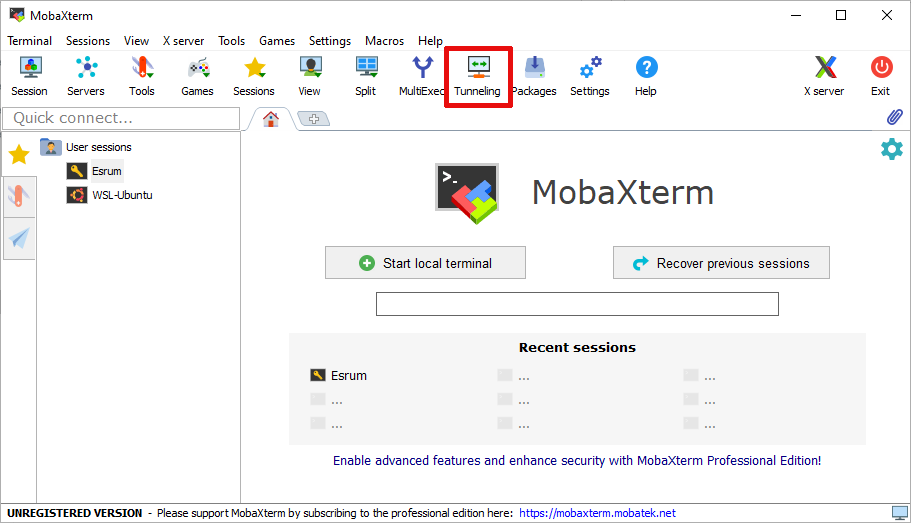
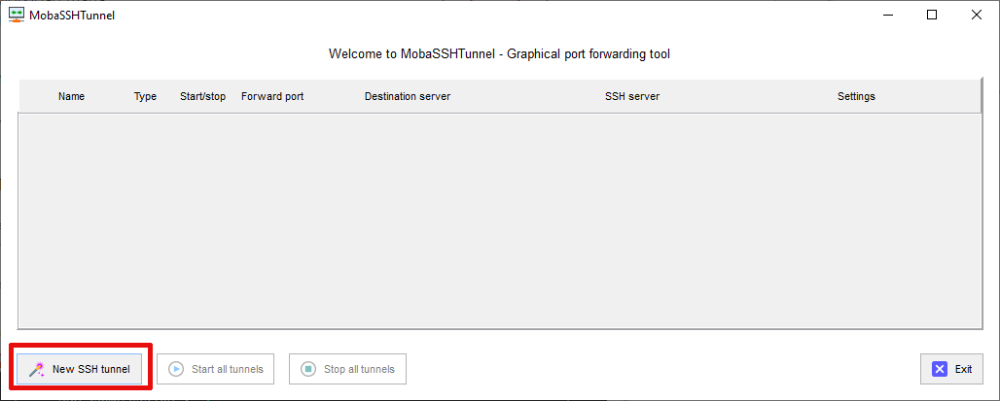
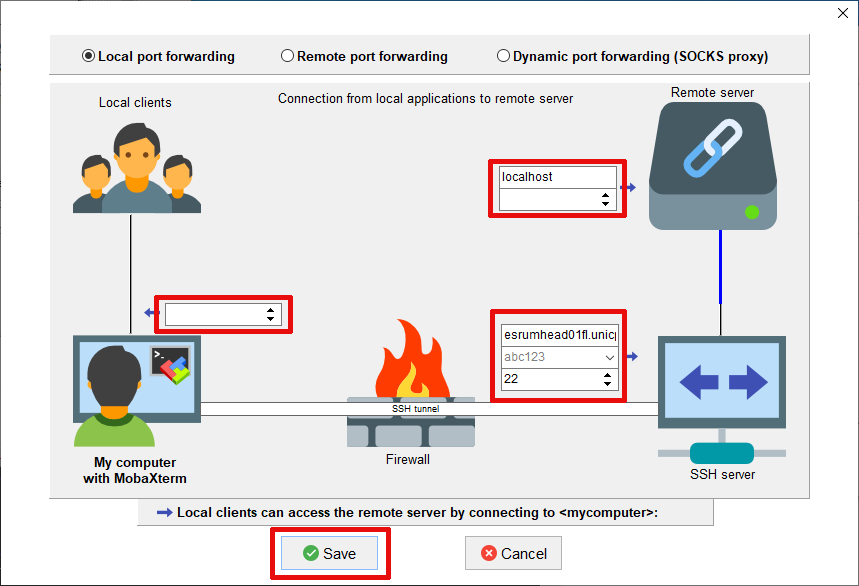
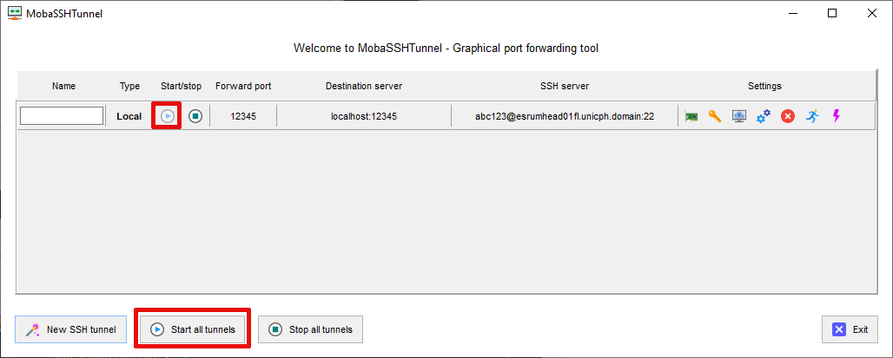

Jupyter Notebooks#
Jupyter Notebooks are available via the module system on Esrum and can be run on regular compute nodes or on the GPU/high-memory node, depending on the kind of analyses you wish to run and the size of your workload.
By default, Jupyter only includes support for Python notebooks, but instructions are included below for how to add support for R.
Note
We are currently working on making Jupyter available along with the RStudio servers. We will announce when this service is ready.
Starting a Jupyter notebook#
To start a notebook on a node, run the following commands:
$ module load jupyter-notebook
$ srun --pty -- jupyter notebook --no-browser --ip=0.0.0.0 --port=XXXXX
The number used in the argument --port=XXXXX must be a value in the
range 49152 to 65535, and must not be a number used by another user on
Esrum. The number shown here was randomly selected for you, and you can
refresh this page for a different suggestion.
This will allocate a single CPU and ~16 GB of RAM to your notebook. If
you need additional resources for your notebook, then please see the
Reserving resources section for instructions on how to reserve
additional CPUs and RAM, and the Using the GPU / high-memory nodes page for
instructions on how to reserve GPUs or large amounts of memory. The
srun accepts the same options as sbatch.
Tip
It is recommended that you execute the srun command in a tmux
or screen session, to avoid the notebook shutting down if you
lose connection to the head node. See Persistent sessions with tmux for more
information.
Tip
You can also start your Jupyter notebook in an interactive Slurm
session, as described in the Interactive sessions section, if
you prefer. If you do so, then it is recommended to use the arguments
--name jupyter or similar, so that you can easily identify the
job (see below). It is still recommended that you start this session
in a tmux or screen session (see the previous tip).
Connecting to the Jupyter Notebook#
To connect to the notebook server, you will first need to set up a connection from your PC to the compute node where your notebook is running. This is called "port forwarding" and is described below.
However, to do so you must first determine on which compute node your job is running. This can be done in a couple of ways:
Look for the URLs printed by Jupyter when you started it on Esrum:
To access the notebook, open this file in a browser: file:///home/abc123/.local/share/jupyter/runtime/nbserver-2082873-open.html Or copy and paste one of these URLs: http://esrumcmpn07fl.unicph.domain:XXXXX/?token=0123456789abcdefghijklmnopqrstuvwxyz or http://127.0.0.1:XXXXX/?token=0123456789abcdefghijklmnopqrstuvwxyz
In this example, our notebook is running on the
esrumcmpn07flnode. All Esrum node names end with.unicph.domain, but we do not need to include this part of the name.Alternatively, run the following command on the head node in a separate terminal:
$ squeue --me --name jupyter JOBID PARTITION NAME USER ST TIME NODES NODELIST(REASON) 551600 standardq jupyter abc123 R 8:49 1 esrumcmpn07fl
By looking in the
NODELISTcolumn, we can see that the notebook is running onesrumcmpn07fl, as above.
Port forwarding for OSX/Linux users#
The following instructions describe how to set up port forwarding to Esrum from your laptop or PC running OSX or Linux.
This is accomplished using the following command-line, replacing
esrumcmpn07fl with the name of the node on which your notebook is
running (see above), and replacing abc123 with your UCPH short
username:
$ ssh -S none -N -L 'XXXXX:esrumcmpn07fl:XXXXX' abc123@esrumhead01fl.unicph.domain
Note
The -S none option ensures that SSH opens a new connection even
if shared connections are enabled (see the ControlMaster section
in man ssh), which is required to forward the requested ports.
The -N option prevents ssh from open a shell on Esrum, which
ensures that you do not accidentally use this terminal and then close
it, while still using the notebook, and the -L option configures
the actual port forwarding.
While this command is running, you can open your notebook via the
http://127.0.0.1:XXXXX/?token=${long_text_here} URL that Jupyter
Notebook printed in your terminal on Esrum:
To access the notebook, open this file in a browser:
file:///home/abc123/.local/share/jupyter/runtime/nbserver-2082873-open.html
Or copy and paste one of these URLs:
http://esrumcmpn07fl.unicph.domain:XXXXX/?token=0123456789abcdefghijklmnopqrstuvwxyz
or http://127.0.0.1:XXXXX/?token=0123456789abcdefghijklmnopqrstuvwxyz
Typically, this can be done by pressing Ctrl and left-clicking on the URL in the terminal:
Warning
The URL including the node name (http://esrumcmpn07fl.unicph.domain:XXXXX/) will not work, since you do not have direct access to the node! You must use the URL starting with http://127.0.0.1:XXXXX/
Tip
If you created a ~/.ssh/config file as suggested in the
Connecting on Linux section, then you can use the shorter
command ssh -S none -N -L 'XXXXX:esrumcmpn07fl:XXXXX' esrum.
Port forwarding for Windows users#
The following instructions describe how to set up port forwarding to Esrum from your laptop or PC running Windows. It is furthermore assumed that you are using MobaXterm to connect to Esrum (see the Configuring MobaXterm section). If not, then please refer to the documentation for your software of choice.
Install and configure MobaXterm as described in Configuring MobaXterm.
Click the middle
Tunnelingbutton on the toolbar.Click the bottom-left
New SSH Tunnelbutton.Follow these steps to configure the tunnel:
In middle-left box, write your chosen port number (e.g.
XXXXX) where the screenshot shows12345.In the top-right pair of boxes, replace
localhostwith the name of the node where your notebook is running (this wasesrumcmpn07flin the example above, but your notebook will likely be running on a different node), and replace12345with your chosen port number (e.g.XXXXX).In the middle-right trio of boxes, write the full name of the head node (
esrumhead01fl.unicph.domain), write your UCPH username where the screenshot hasabc123, and make sure that the value is22.Finally, click
Save.
If the tunnel does not start automatically, press either the Play-icon button or the
Start all tunnelsbutton:Enter your password and your SSH tunnel should now be active.
Once you have configured MobaXterm and enabled port forwarding, you can
open your notebook via the
http://127.0.0.1:XXXXX/?token=${long_text_here} URL that Jupyter
Notebook printed in your terminal on Esrum:
To access the notebook, open this file in a browser:
file:///home/abc123/.local/share/jupyter/runtime/nbserver-2082873-open.html
Or copy and paste one of these URLs:
http://esrumcmpn07fl.unicph.domain:XXXXX/?token=0123456789abcdefghijklmnopqrstuvwxyz
or http://127.0.0.1:XXXXX/?token=0123456789abcdefghijklmnopqrstuvwxyz
Typically, this can be done by pressing Ctrl and left-clicking on the URL in the terminal.
Warning
The URL including the node name (http://esrumcmpn07fl.unicph.domain:XXXXX/) will not work, since you do not have direct access to the node! You must use the URL starting with http://127.0.0.1:XXXXX/
Adding an R kernel to Jupyter#
The Jupyter module only comes with a Python kernel. If you instead wish to use R in your Jupyter notebook, you can add an R Kernel for the specific version of R that you wish to use.
To do so, run the following commands, replacing R/4.3.3 with the version of R that you wish to use:
$ module load jupyter-notebook/6.5.4
$ module load --auto R/4.3.3
$ R
> install.packages('IRkernel')
> name <- paste("ir", gsub("\\.", "", getRversion()), sep="")
> displayname <- paste("R", getRversion())
> IRkernel::installspec(name=name, displayname=displayname)
> quit(save="no")
This will make an R kernel with the name R 4.3.3 available in
Jupyter. You can repeat these commands for each version of R that you
wish to make available as a kernel. Run the command module purge
between each, to ensure that you have loaded only the expected version
of R and gcc that R depends on.
Once you are done adding R versions, you start notebook as shown above:
$ module load jupyter-notebook/6.5.4
$ srun --pty -- jupyter notebook --no-browser --port=XXXXX
While you do not need to load the R module first, if you only wish to run R code, you must do so if you wish to install R libraries via the notebook:
$ module load jupyter-notebook/6.5.4
$ module load --auto R/4.3.3
$ srun --pty -- jupyter notebook --no-browser --port=XXXXX
Troubleshooting#
Jupyter Notebooks: Browser error when opening URL#
Depending on your browser you may receive one of the following errors. The typical causes are listed, but the exact error message will depend on your browser. It is therefore helpful to review all possible causes listed here.
When using Chrome, the cause is typically listed below the line that says "This site can't be reached".
The connection was resetThis typically indicates that Jupyter Notebook isn't running on the server, or that it is running on a different port than the one you've forwarded. Check that Jupyter Notebook is running and make sure that your forwarded ports match those used by Jupyter Notebook on Esrum.
Localhost refused to connectorUnable to connectThis typically indicates that port forwarding isn't active, or that you have entered the wrong port number in your browser. Therefore,
Verify that port forwarding is active: On OSX/Linux that means verifying that an
sshcommand is running as described in the Port forwarding for OSX/Linux users section, and on Windows that means activating port forwarding in MobaXterm as described in the Port forwarding for Windows users section.If using the instructions for Linux/OSX, verify that you ran the
sshcommand on your laptop or desktop, and not on the Esrum head node.Verify that either of these are using the same port number as in the
jupytercommand you ran or as in thehttp://127.0.0.1URL printed by Jupyter.Verify that you are using the second URL that Jupyter prints on the terminal, namely the URL starting with
http://127.0.0.1:XXXX:To access the notebook, open this file in a browser: file:///home/abc123/.local/share/jupyter/runtime/nbserver-2082873-open.html Or copy and paste one of these URLs: http://esrumcmpn07fl.unicph.domain:XXXXX/?token=0123456789abcdefghijklmnopqrstuvwxyz or http://127.0.0.1:XXXXX/?token=0123456789abcdefghijklmnopqrstuvwxyz
For security reasons it is not possible to connect directly to the compute nodes.